Переписки и чаты в Инстаграме: полный обзор

- Как работают переписки в Инстаграме*
- С компьютерной версии
- Через Facebook*
- Приложение Threads (Больше не актуально)
- Запросы на переписку: посмотреть, разблокировать и удалить
- Отключить запросы на чат в Инстаграме*
- Поставить флажок возле главного чата
- Изменить фон и быстрые реакции
- Отправить фотографию или видео
- Как восстановить переписку если удалил
- На Айфоне
- На компьютере
- Как стереть переписки в Инстаграме*
- Функция скрытых сообщений: как найти
- Сделать фейковую переписку в Инстаграме*
- Приложения для фейковых переписок
- Видеовозможности в чатах Инстаграма*
Восстановить переписку в Инстаграме* не так просто, если пользователь уже закрыл активное приложение или не установил сервисы для хранения писем. В социальной сети можно вернуть чат в том случае, если он был удален менее 30 секунд назад.
Как работают переписки в Инстаграме*
В социальной сети можно переписываться с мобильной и компьютерной версий. Хранилище сообщений называют «Директ», который хранит список сообщений, запросов и делит их по разным категориям. Как переписываться в Директе с мобильной версии:
- Открыть приложение Instagram* – нажать сверху по значку в виде облака со стрелкой.
- Выбрать пользователя из списка друзей – Написать сообщение.

- Ввести текст и отправить.
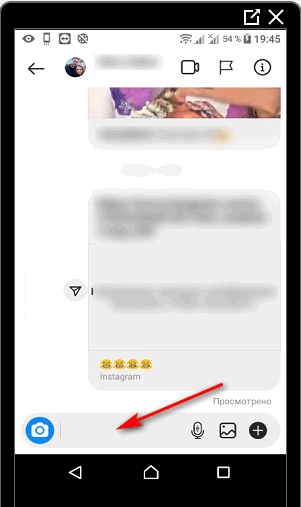
Кроме текстовых уведомлений можно поделиться:
- фотографией или видео;
- пригласить в видеочат;
- поделиться публикацией или Историей;
- сделать ссылку на сторонний сервис;
- отправлять голосовые сообщения.
В Директе активны ссылки, в отличие от комментариев и описаний в публикациях. Поэтому участники беседы могут переходить на сайты, обмениваться сторонними ресурсами.
Инстаграм* поддерживает создание групповых бесед, работу с видео-комнатами. Если собеседника пригласить на видеоконференцию и он откажется – у него появится уведомление: «Вы пропустили видео-чат».
Отдельная функция для мобильной версии – голосовые сообщениями. Ими можно быстро обмениваться, но записывать аудио всего до одной минуты. Участники беседы могут отправлять несколько дорожек и те воспроизводятся по очереди. Как записать аудиосообщение:
- Зайти в Директ – выбрать переписку.
- Нажать снизу по значку в виде микрофона – задержать палец до конца записи.
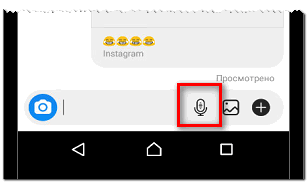
- Отправить.
Чтобы не удерживать кнопку записи, нужно сделать свайп по символу в виде «замка». Теперь запись не сбросится и пользователь сможет создать аудио-сообщение до одной минуты. Если же при записи произошли какие-то проблемы, то смахнув влево можно удалить записанную часть и создать новую.
С компьютерной версии
С помощью ПК можно отправлять сообщения, делиться ссылками и отправлять фотографии. В отличие от мобильной, в компьютерной версии есть отдельная функция: «Поставить лайк». Чтобы воспользоваться веб-форматом Инстаграма*, не обязательно устанавливать сторонние программы или эмуляторы. Как перейти к сообщениям:
- Зайти на официальный сайт Instagram.com* – авторизоваться.
- Нажать в верхней части страницы по облаку с молнией – перейти к переписке.
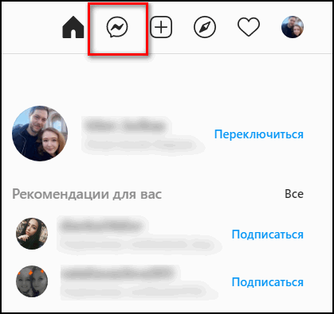
- Выбрать чат – отправить сообщение.
Еще одно отличие: в веб-версии на главной появляется кнопка: «Отправить сообщение». Нажав по ней, на экране появится перечень друзей и пользователей, с которыми недавно была переписка. Можно выбрать до 40 человек, чтобы отправить сообщение и пригласить в общую группу для общения.
Такой способ подходит для создания рассылок и помогает владельцам бизнес-аккаунтам. Можно создать письмо с приглашением на мероприятие, оповестить об акциях и прорекламировать новые товары.
Через Facebook*
С помощью Фейсбука* владелец страницы сможет переписываться и управлять рекламным аккаунтом. Для работы с сообщениями, пользователю нужно переключить профиль Инстаграм* на бизнес-статус и привязать аккаунт из второй социальной сети. Как работать с сообщениями через Фейсбук*:
- Зайти в FB – создать публичную страницу.
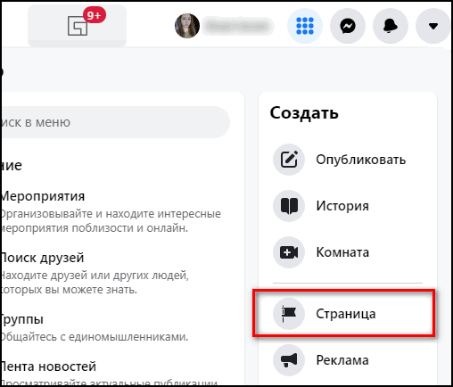
- Перейти к настройкам – Instagram*.
- Подключить – перейти на страницу.
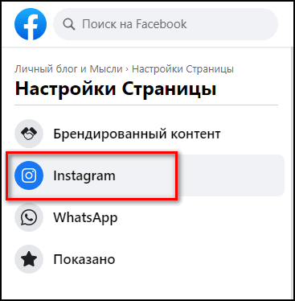
- Выбрать сбоку: «Business Suite».
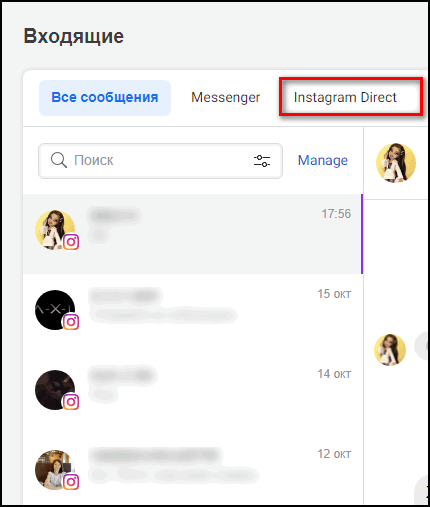
Для подключения аккаунта из Инстаграма*, нужно чтобы он был общедоступным и в статусе «Бизнес». Иначе публичная из Фейсбук* не подключится ко второй социальной сети.
Через Business Suite возможно переписываться в Instagram*, отправлять сообщения и фотографии. Функционал схож с тем, который актуален для веб-версии. В этой версии можно просматривать переписки, удалять, сортировать и даже выделять те, которые буду в начале списка.
Приложение Threads (Больше не актуально)
Приложение Threads (больше не актуально) есть для устройств под управлением Android и iOS. Его преимущество в том, что это отдельная утилита для работы с сообщениями в Инстаграме*. Поддерживает запись коротких историй, выбор «настроения» в виде статуса и работу с сеансами активности. То есть, пользователь может указывать: «В сети» или «Отсутствую» не посещая основного приложения.
Как воспользоваться и начать переписку:
- Скачать приложение в Play Market или AppStore.
- Открыть – авторизоваться с помощью страницы в Инстаграме*.
- Открыть список сообщений – начать переписку.
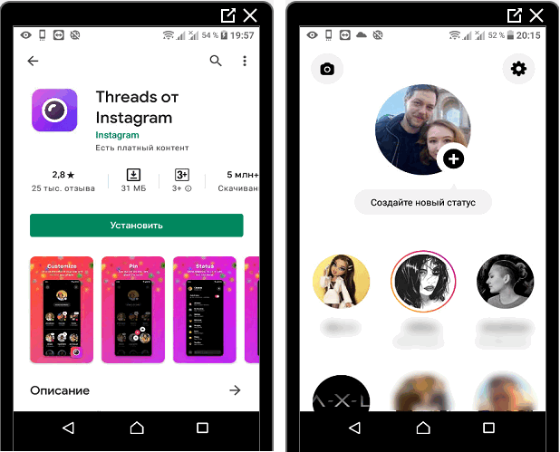
Пользователь может записывать Сторис, которые будут доступны только участникам приложения. Через Threads проще создавать видеочаты, групповые переписки. К тому же, из-за задержки между Инстаграмамом* и мессенджером, остаются копии переписок и некоторые сообщения можно восстановить, если удалил.Запросы на переписку: посмотреть, разблокировать и удалить
Чтобы начать чат в Инстаграме*, нужно отправить запрос на переписку. Если пользователи не подписаны взаимно, что в списке: «Заявки» появится уведомление: «Никнейм отправил запрос на переписку». Ниже появятся варианты: «Отклонить», «Принять» и «Заблокировать». Посмотреть список всех заявок:
- Зайти в Инстаграм* – Директ.
- В правом верхнем углу «Запросы» - перейти.
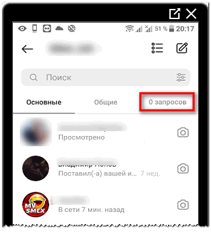
- Посмотреть список уведомлений.
В отличие от стандартного раздела с сообщениями, оповещения о новых заявках будут заметны в виде счетчика. И если включены Push-оповещения – можно узнать таким способом.
Инстаграм* делит заявки на открытые и скрытые. Вторые подразумевают запросы от пользователей, на которых ранее жаловались за мошенничество, если сообщение выглядит как спам или содержит ссылку. Такие запросы сложнее проверить, чем обычные, потому что появится предупреждение об опасности.
Если владелец страницы не хочет общаться – он может ответить на запрос: «Отклонить и удалить». Переписка будет стерта навсегда, без возможности восстановить. Чтобы переписываться – использовать кнопку: «Принять запрос».
Отключить запросы на чат в Инстаграме*
Владелец страницы может отключить любые запросы на переписку в Инстаграме*. Это возможно через настройки конфиденциальности и особые статус учетной записи. Как отключить переписки через Настройки:
- Открыть Инстаграм* – Настройки.
- Конфиденциальность – Сообщения.
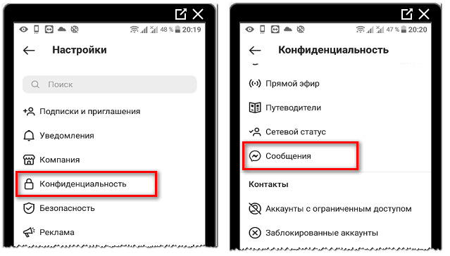
- Потенциальные контакты – Другие пользователи Instagram*.
- Не получать запросы – Сохранить изменения.
Помимо этого, в социальной сети можно выделить пункты, как: не получать сообщения от друзей из привязанного профиля в Facebook, от товарищей. Это значит, что у этих пользователей появится только кнопка: «Подписаться» и только после этого можно отправлять сообщения.
Поставить флажок возле главного чата
В социальной сети нельзя назначить главный чат, но если пользователь переписывается с одним и тем же человеком постоянно – переписка будет появляться первой. Есть другие варианты, как сортировать сообщения, но для этого нужно включить бизнес-профиль. Преимущества в чатах для бизнес-аккаунтов:
- разделы: «Общие» и «Основные». В первый можно отправить уведомление, которые не особо важные. Во второй – те, которые постоянно нужны владельцу страницы;
- автоответчий. Создать список цитат, которые автор сможет отправить всего за один клик.
С помощью разделов: «Основной» и «Общие» можно переносить сообщения и разделять по категориям важности. В самом приложении функция «Установить главный чат» отсутствует, но она есть в управлении переписками через Facebook и в Threads.
Как назначить основную переписку с помощью FB:
- Зайти в Facebook – выбрать ранее созданную публичную страницу.
- Перейти в перепискам – возле чата установить значок к виде «звездочки».
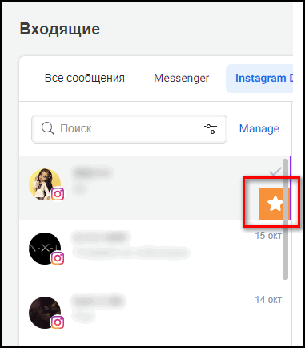
- Выделить, как избранное.
В приложении Инстаграма* это не будет отображено. Но такой способ помогает общаться с клиентами при управлении бизнес-профилем.
Один из вопросов пользователей: «что означает флажок в переписке Инстаграма*». Это символ расположен в верхней части меню управления. И его задача: оповестить администрацию о нарушениях. Он не выделяет чаты и не делит на их по степени важности. Как только владелец страницы нажмет по нему, появится перечень причин для жалоб на чужой аккаунт.
Изменить фон и быстрые реакции
В одном из обновлений для чатов были предложены фоны. Они меняют изображение на заднем фоне и интерфейс. Пользователям предложено несколько вариантов и индивидуальные настройки для каждой переписки:
- приуроченные к событиям: от 10 первых;
- 20 основных: только цвет или градиент.
В темы чата добавляются не только те, которые были созданы официальной поддержкой, но и добавленные сторонними разработчиками. Как поменять тему чата:
- Зайти в Директ – нажать по любому чату.
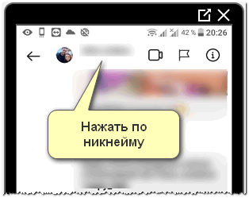
- Нажать по имени собеседника – Изменить тему.
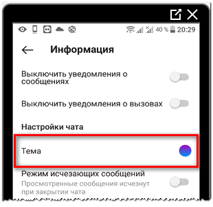
Выбрать из списка – Сохранить.
У собеседника появится короткое уведомление, что оппонент изменить тему чата. Оттенок будет установлен у обоих и каждый сможет его поменять.
Реакции – это список смайлов, которыми можно отметить сообщение. Достаточно нажать по тексту, своему или собеседника, чтобы отправить смайл.
Как настроить быстрые реакции:
- Нажать по сообщению собеседника – появится список смайлов.
- В конце нажать по значку «+» - появится весь перечень emoji.
- Настроить – подобрать новый список.
- Сохранить.
Теперь владелец профиля сможет отмечать сообщения теми смайлами, которые ему нравятся. Но выбирая перечень, нужно учитывать разные версии операционной системы и то, что в устаревших могут не отображаться новые emoji.
Отправить фотографию или видео
С помощью чата в Инстаграме* можно отправить видео или фотографию. Причем, если собседник сделает скриншот «исчезающего фото» - отправителю придет уведомление об этом. Есть 3 способа, как поделиться видео или картинкой:
- записать с помощью инструмента: «Камера»;
- воспользоваться материалами, которые уже есть в Галерее;
- сделать исчезающее видео или фото.
Добавить фотографию в чат, которая уже создана, возможно с мобильной и компьютерной версий. Как загрузить в переписку картинку:
- Зайти в переписку – нажать по значку снизу: Изображение.
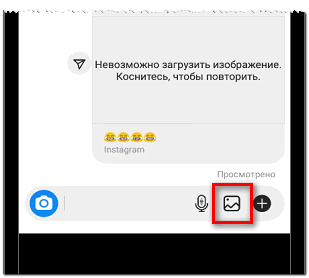
- Выбрать из Галереи устройства – отправить.
Или, есть еще один вариант – зайти в Галерею и выбрать пункт: «Поделиться». Но для видеозаписей такой способ не подойдет и владелец может отправить клип продолжительностью не более 30 секунд, записанный через Директ:
- Зайти в выбранный чат – нажать по значку: «Записать».
- Зажать по кнопке: «Пуск» - сделать видеозапись.
- Отправить собеседнику.
При создании картинки таким способом, можно выбрать режим: «Исчезающее фото». Его можно открыть всего один раз, а при просмотре сверху появится значок, показывающий время. Если получатель сделает скриншот – отправитель получит уведомление.
Последний вариант, как поделиться фото или видео – воспользоваться кнопкой: «Отправить», которая находится под каждой публикацией.
- Перейти к Ленте – выбрать интересный пост.
- Нажать снизу по значку в виде «самолетика».
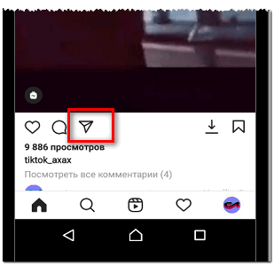
- Выбрать получателя – отправить.
Как только сообщение будет отправлено, собеседник получит ссылку и полноразмерный снимок. Он сможет перейти по URL, если нажмет по картинке.
Как восстановить переписку если удалил
Стандартного способа, как возвращать сообщения, которые были удалены самим владельцем аккаунта – нет. Для владельцев Android предусмотрен один вариант, как восстановить письма. С помощью приложения ChatSave пользователь может сохранять уведомления и восстанавливать. Как вернуть чат в Инстаграме*, воспользовавшись утилитой:
- Зайти в Play Market, скачать – открыть.
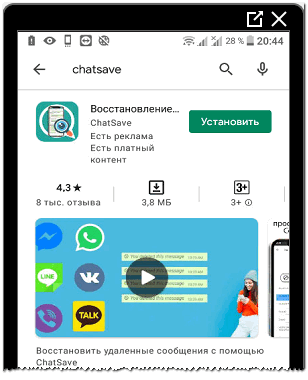
- Выбрать социальную сеть, где нужно сохранять сообщения.
- Подтвердить действия.
Но утилита не восстанавливает уведомления, которые были отправлены до установки. То есть, процесс сохранения переписок включается сразу после ChatSave. И пока она работает, можно вернуть письма в любое время.
Перед каждым посещением Инстаграма* нужно запускать утилиту, чтобы она начала процесс копирования. Даже если сообщение будет удалено со стороны собеседника или он отменит отправку – приложение создаст копию.
На Айфоне
Для устройство под управлением iOS удаление переписки в Инстаграме* значит, что восстановить уведомления каким-либо способом не получится. Но есть один вариант, как вернуть утерянные данные – написать собеседнику, чтобы тот отправил копию. Как это работает:
- Зайти в переписку – попросить собеседника, чтобы он прислал переписку.
- Оппонент создает скриншоты и отправляет.
Или, может копировать текстом сообщения в компьютерной версии и отправлять. Но при любой форме восстановления не будут возвращены отправленные фотографии или видео. Только в том случае, если участник беседы согласится их скачать или сделать отдельные снимки экрана.
На компьютере
С помощью компьютера восстановить переписку несложно, если пользователь ранее подключал адрес электронной почты к аккаунту. Копирование данные предполагает, что владелец получит копию, со всеми отправленными комментариями и сообщениями. Как воспользоваться:
- Зайти в Инстаграм* с компьютерной версии.
- Перейти в раздел: «Настройки» - Безопасность и конфиденциальность.
- Скачать данные – Запросить файл.
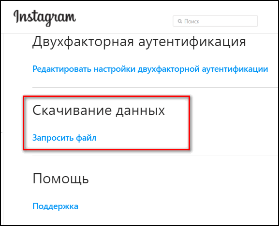
- Ввести адрес почты – выбрать тип файла.
- Отправить запрос – на email поступит сообщение в течение 36 часов.
- Появится ссылка в виде письма – Получить ZIP-архив.
После того, как владелец страницы получит сообщение с архивом, он сможет его распаковать и посмотреть все вложенные папки. Среди доступных есть «Комментарии», «Сообщения». Выбрав сообщения, можно посмотреть копии и списки чатов, которые были созданы.
Помимо этого, в папках будут «черный» список, перечень пользователей в «Близких друзьях» и другое. Если нужно временно удалить страницу или навсегда – загруженные данные помогут восстановить. Но среди этих папок отсутствуют публикации: фото и видео, которые были размещены пользователем.
Как стереть переписки в Инстаграме*
В социальной сети можно удалить чат, который мешает или уже не нужен. Кроме удаления всех сообщений, есть отдельная очистка по каждому уведомлению. Как убрать одно сообщение в Инстаграме*:
- Зайти в Директ – перейти в чат.
- Зажать пальцем по своему сообщению.
- Выбрать вариант действий: «Отменить отправку».
Теперь получатель не сможет прочесть уведомление, которое было отправлено. Но чтобы убрать весь чат:
- Открыть Директ – перейти к списку всех переписок.
- Зажать пальцем по выбранной – Удалить.
- Подтвердить действие.
Отменить полную очистку невозможно и восстановить у владельца получится, только если установлен SaveChat. Убрать все переписки не получится, но нажимая по каждому – можно очищать даже чаты, которые длились несколько лет.
Функция скрытых сообщений: как найти
Скрытые сообщения доступны в настройках каждого чата. Это уведомления, которые доступны либо 6 часов, либо до того момента, как один из собеседников не сделает свайп вверх. Есть два способа, как включить:
- смахнуть вверх. Появится само меню исчезающих сообщений, фон потемнеет;
- перейти в настройки переписки.
Как переключиться на исчезающие сообщения:
- В Директе выбрать нужный чат – нажать по имени пользователя.
- Появится список функций – Исчезающие сообщения.
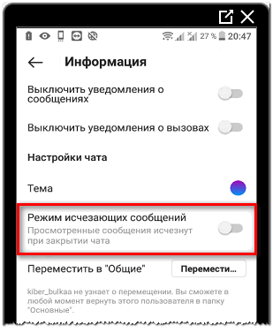
- Включить и сохранить.
В этом режиме все отправленные письма будут удалены, как только владелец закроет чат или отключит функцию. Чтобы выключить, нужно снова сделать свайп вверх или перейти к настройкам. После отключения функции нельзя восстановить сообщения. В отличие от применения сторонних приложений, такие уведомления не будут сохраняться. Доступ к переписке остается на протяжении 6-ти часов, пока владелец не посмотрит. И если он не успеет просмотреть письмо – оно будет автоматически удалено.
Сделать фейковую переписку в Инстаграме*
Фейковая переписка может понадобиться для разных целей, включая создание смешных картинок. Пользователям предложено два варианта, как сделать ненастоящий чат в Инстаграме*:
- сторонние приложения. Пользователь пишет уведомление за собеседников и отправляет их в определенное время;
- создав другую страницу.
Второй профиль в Инстаграме* не воспрещен и владелец профиля может одновременно управлять несколькими учетными записям.
Как сделать фейковую переписку:
- Открыть Instagram* – Настройки.
- Пролистать вниз – Добавить еще один аккаунт.
- Зарегистрировать новую учетную запись с другими данными.
- Открыть её – Поиск.
- Ввести никнейм своего первого профиля – отправлять сообщения.
Важно отключить в настройках «Рекомендовать мою страницу другим пользователям». Она доступна с компьютерной версии и означает, что те люди, которые записаны в телефонной книге, смогут найти владельца по номеру.
Приложения для фейковых переписок
Используя утилиты для фейковых переписок, можно создавать интересные диалоги и исполнять роль двоих сразу. Пользователю нужно установить, выбрать тему чата и задать название первому и второму участнику. Далее, отправлять сообщения от их лица, но стараться выдерживать время между отправкой. Как воспользоваться приложениями для фейковых переписок:
- Перейти в Play Market, скачать и установить Funsta – открыть.
- Нажать снизу по значку: «+» - Создать контакт.
- Перейти к созданию чата – отправлять сообщения с обеих сторон.
Кроме текстовых уведомлений, пользователь может сделать запрос на видеочат и отклонить его, позвонить «собеседнику». Единственный недостаток таких приложений – пометка сверху. То есть, в Funsta будет отмечено, что переписка была создана в утилите и она не относится к официальному сообществу. Но пользуясь стандартными редакторами для фото или приобретя премиальную версию, можно убрать «водяной знак».
Видеовозможности в чатах Инстаграма*
В Инстаграме* есть видеовозможности для общения наедине или целой компанией:
- запустить видеочат с товарищем;
- создать группу друзей и начать общение по видео;
- отправлять короткие видеозаписи товарищам;
- использовать маски при записи.
Наиболее популярной считается – видеочат и добавление масок. В самом Директе можно начать видеообщение: экран будет разделен на две части или собеседники могут выбрать миниатюры.
В видеочате, если свернуть приложение, на экране смартфона снизу появится небольшое окно, где будет отображен собеседник. Потянув за края, можно расширить экран. С помощью кнопки: «Основная камера», доступно переключение между режимами. Как воспользоваться видеообщением:
- Зайти в Директ – нажать по любому чату.
- Сверху значок в виде камеры – отправить запрос.
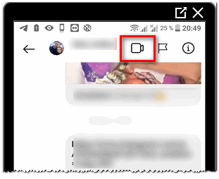
- Подождать, пока товарищ подключится.
Если нужен чат для нескольких участников:
- В Директе выбрать функцию: «Комнаты».
- Пригласить несколько друзей и дождаться, пока все подключатся.
Во время такого общения можно отключить микрофон или временно сделать неактивной камеру. При этом другой пользователь будет активен: его камера не будет заблокирована. В таком режиме можно подключать других участников: нажать снизу по кнопке: «Пригласить».